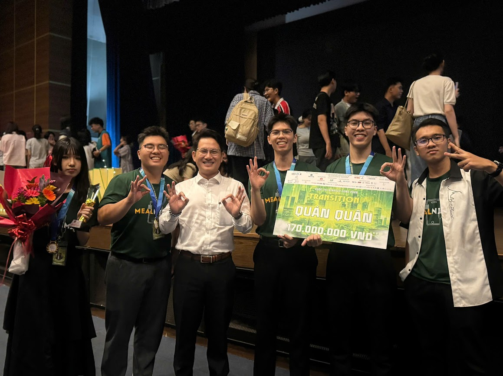

DUONG THE TAI
Ứng viên Quản trị viên Tập sự Chuỗi cung ứng & Vận hành Supply Chain & Operations Trainee Candidate
Ứng viên Quản trị viên Tập sự Chuỗi cung ứng & Vận hành theo đuổi chương trình Song ngành Kinh doanh Quốc tế và Logistics tại Đại học Kinh tế TP. Hồ Chí Minh (UEH). Kết hợp tư duy tối ưu hóa hệ thống bằng dữ liệu, bản lĩnh điều phối hiện trường thực chiến và kỷ lục hơn 15 giải thưởng học thuật, khởi nghiệp cấp Quốc gia & Khu vực. Supply Chain & Operations Trainee Candidate commanding a high-performance Dual Major in International Business and Logistics & Supply Chain Management at UEH University. Blending data-driven system optimization, hands-on field operations execution, and a proven record of 15+ national & regional championships.
1.2 — Chỉ Số Hiệu Suất Trọng Tâm (KPIs) 1.2 — Key Performance Indicators (KPIs)
VERIFIED RECORD15 Thành Tựu Học Thuật & Khởi Nghiệp 15 Academic Achievements
Kỷ lục ấn tượng với hơn 15 ngôi vị Quán quân, Á quân và giải thưởng nghiên cứu khoa học xuất sắc trong lĩnh vực kinh doanh, khởi nghiệp và logistics toàn quốc. Riêng năm 2025 đánh dấu cột mốc bứt phá với 10 giải thưởng lớn liên tiếp qua hai học kỳ tại UEH. An impressive record with over 15 major championships, high honors, and exemplary research awards in the fields of business, entrepreneurship, and logistics nationwide. I believe 2025 is a landmark year for my achievements, as winning 10 awards in one year across two semesters at UEH University truly requires overcoming many obstacles.
02 Bằng Cử Nhân Song Ngành 02 Top-Tier Degrees
Theo đuổi đồng thời chương trình Song ngành hiệu suất cao tại Đại học Kinh tế TP.HCM (UEH): Kinh doanh Quốc tế & Logistics và Quản lý Chuỗi cung ứng. Simultaneously commanding a high-performance Dual Major at the University of Economics Ho Chi Minh City (UEH): International Business & Logistics and Supply Chain Management.
02 Dự Án Khởi Nghiệp Thực Chiến 02 Venture Startups
Năng lực thực thi khởi nghiệp đã được kiểm chứng ở vai trò Founder & Manager: Vận hành chuỗi lưu trú Unistay đạt 90% tỷ lệ lấp đầy (biên lợi nhuận 25%) và mở rộng hệ sinh thái số EduTynker vượt 10.000+ thành viên. Proven entrepreneurial execution as Founder & Manager, scaling Unistay student housing to a 90% occupancy rate (25% net margin) and EduTynker to 10,000+ active community members.
1.3 — Các Dự Án Tâm Đắc Tiêu Biểu 1.3 — Selected Portfolio Masterpieces
LIVE EXPERIENCE & ARCHIVE
Chiến Lược Tiếp Thị Sản Phẩm Toàn Cầu & Tối Ưu Hóa Game Global Product Marketing & Game Optimization Strategy
Project Identity: Project AETERNA
Tác động cốt lõi: Bảo tồn bản sắc văn hóa, lịch sử và di sản của 11 quốc gia Đông Nam Á thông qua điểm giao thoa giữa cơ chế RPG và MMORPG.
Core Impact: Preserving the cultural identity, history, and heritage of 11 Southeast Asian countries by finding the intersection between RPG and MMORPG mechanics.
Thực thi chiến lược: Tích hợp và trực quan hóa di sản vật thể, phi vật thể cùng các anh hùng lịch sử vào hệ thống vật phẩm trong dự án.
Strategic Execution: Integrating and visualizing tangible and intangible heritage and historical heroes into project objects.

Mô Phỏng Kiểm Tra Khuyết Tật Container Tự Động Automated Container Defect Inspection Simulation
Project Identity: "Cont-Tect" — Team Motion Masters
Tác động cốt lõi: Rút ngắn thời gian quét và xác thực trung bình từ 25 phút xuống còn 5 phút mỗi container so với kiểm tra thủ công truyền thống.
Core Impact: Slashing average container scanning and validation times from 25 minutes down to 5 minutes per container compared to traditional manual checks.
Thực thi chiến lược: Xây dựng giải pháp kiểm tra tự động trong 24 giờ Hackathon áp lực cao nhằm tối ưu luồng vận hành cảng biển, vượt qua hơn 100 đội thi khu vực.
Strategic Execution: Formulated an automated inspection solution under a high-pressure 24-hour hackathon to optimize port terminal workflows, outperforming 100+ regional teams.

Mô Hình Chuỗi Cung Ứng Toàn Trình Có Khả Năng Mở Rộng End-to-End Scalable Supply Chain Model
Project Identity: Mealnimals / GroWarriors
Tác động cốt lõi: Thiết lập mô hình kinh doanh và logistics có khả năng mở rộng, onboard 500+ người dùng ngay tháng đầu và tái cấu trúc vận hành đạt biên lợi nhuận ròng dự phóng 20%.
Core Impact: Formulated an end-to-end business and scalable logistics model, onboarding 500+ active users in month 1 and restructuring workflows to project a 20% net profit margin.
Thực thi chiến lược: Xây dựng nền tảng trung gian kết nối nhà bán hàng với người tiêu dùng, nâng cấp từ mô hình đi chợ và phân phối thực phẩm truyền thống.
Strategy Implementation: Built an intermediary platform connecting merchants with users, evolving from a traditional grocery shopping and food distribution model.
1.4 — Kỹ Năng, Công Cụ & Chứng Chỉ Quốc Tế 1.4 — Skills, Tools & Global Credentials
CAPABILITY MATRIX- Tiếng ViệtVietnamese Native
- Tiếng AnhEnglish IELTS C1
- Tiếng TrungChinese HSK 2
- Logistics Operations Specialist (Tan Minh Tri Academy — TMT OPS & DOCS)
- MOS Certification (Microsoft Office Specialist: Word, Excel, PowerPoint)
1.5 — Thông Tin Liên Hệ & Hiện Diện Số 1.5 — Contact & Digital Presence
DIRECT CHANNELSĐịa chỉ:Address: 473 Hoa Hao St, Dien Hong Ward, Ho Chi Minh City
Điện thoại:Phone: 0347347538
Email: duongthetai2013@gmail.com
THÀNH TÍCH HỌC THUẬT & NGHIÊN CỨU KHOA HỌC ACADEMICS & SCIENTIFIC RESEARCH
2.1 — Tổng Quan Đại Học Kinh Tế TP. Hồ Chí Minh (UEH) 2.1 — University Overview: University of Economics Ho Chi Minh City (UEH)
Đại học Kinh tế TP. Hồ Chí Minh (UEH) là một trong những đại học trọng điểm quốc gia với gần 50 năm phát triển, đội ngũ giảng viên chất lượng cao và mạng lưới hợp tác quốc tế sâu rộng cùng hơn 125 đối tác toàn cầu. Tháng 10/2023, UEH chính thức chuyển đổi sang mô hình Đại học đa ngành, đa lĩnh vực với 4 trường thành viên và phân hiệu UEH Mekong. Nhà trường vinh dự đón nhận danh hiệu Anh hùng Lao động và Huân chương Độc lập hạng Nhất. Trên bảng xếp hạng quốc tế, UEH thuộc Top 301+ Đại học tốt nhất Châu Á (QS Asia) và Top 501–600 Đại học hàng đầu thế giới theo Times Higher Education giai đoạn 2025–2026. The University of Economics Ho Chi Minh City (UEH) is one of the key national universities, with nearly 50 years of development, a high-quality faculty, and a wide-ranging international cooperation network with over 125 partners worldwide. UEH has trained hundreds of thousands of bachelors, masters, and doctoral graduates, contributing high-quality human resources to both the public and private sectors in Vietnam. In October 2023, UEH officially transformed into a multi-disciplinary, multi-field university model with four member schools and the UEH Mekong branch. The university has been awarded many prestigious honors, such as the title of Hero of Labor and the First-Class Independence Medal. On international rankings, UEH is among the Top 301+ best universities in Asia according to QS Asia and Top 501–600 universities worldwide according to Times Higher Education in 2025–2026.
Kinh Doanh Quốc Tế (International Business) International Business
Global Trade, Cross-Border Strategy & Supply Chain
Logistics & Quản Lý Chuỗi Cung Ứng Logistics & Supply Chain Management
Operations, Procurement, Port & Cold-Chain Systems
2.3 — Các Học Phần Chuyên Ngành Điểm Tuyệt Đối (4.0 / 4.0) 2.3 — High-Performance Core Courses
Enterprise Resource Planning (ERP)
Trọng tâm: Làm chủ hệ thống Odoo cho Quản trị Vận hành & Logistics. Focus: Mastering Odoo system for Operations & Logistics management.
Thực thi: Ứng dụng các phân hệ Odoo nhằm tinh gọn quy trình toàn doanh nghiệp, đảm bảo tính toàn vẹn dữ liệu và theo dõi chuỗi cung ứng theo thời gian thực. Execution: Applied Odoo modules to streamline company-wide workflows, ensure data integrity and real-time tracking of supply chain activities.
International Business Project
Trọng tâm: Dự án "Kem/Gel tẩy tế bào chết từ vỏ trứng tái chế". Focus: "Eggshell-based Exfoliating Gel/Cream".
Thực thi: Xây dựng chiến lược thâm nhập thị trường quốc tế toàn diện cho sản phẩm chăm sóc da bền vững, từ ý tưởng R&D đến lập bản đồ chuỗi cung ứng toàn cầu. Execution: Developed a comprehensive international market entry strategy for a sustainable skincare product, from R&D conceptualization to global supply chain mapping.
Business Simulation
Trọng tâm: Khai thác hệ thống Globus để ra quyết định quản trị chiến lược. Focus: Leverage the Globus system to make important business decisions.
Thực thi: Đóng vai trò giám đốc điều hành (C-level) vận hành tập đoàn toàn cầu ảo. Ứng dụng phân tích kinh doanh và chiến lược logistics để tối ưu hóa sản xuất, định giá và phân phối nhằm tối đa hóa thị phần. Execution: Acted as a C-level executive to operate a virtual global corporation. Applied core business intelligence and logistics strategies to compete in a simulated market, optimizing production, pricing, and distribution to maximize market share.
2.4 — Công Trình Nghiên Cứu Khoa Học & Giải Thưởng 2.4 — Scientific Research Publications & Awards

1. Logistics Xanh Chặng Cuối & Kỷ Nguyên Logistics 5.0 1. Green Last-Mile Logistics & The Logistics 5.0 Era
"Exploring Customer Reactions to Green Alternatives in Last-Mile Logistics: The Impact of Shifting to Electric Vans Integrated with Sustainable Practices and Logistics Marketing."
- Ứng dụng mô hình S-O-R (Stimulus-Organism-Response) làm khung lý thuyết chủ đạo.
- Tích hợp mô hình SERVQUAL và lý thuyết Triple Bottom Line (TBL) để xác định các yếu tố quyết định chất lượng dịch vụ chặng cuối.
- Xử lý dữ liệu thực nghiệm từ 472 phản hồi thông qua mô hình cấu trúc tuyến tính SEM (PLS-SEM) trên phần mềm SmartPLS 4.0 và SPSS.
- Chứng minh yếu tố Sự đảm bảo (Assurance) có ảnh hưởng mạnh nhất đến niềm tin của khách hàng đối với các giải pháp vận tải xanh (EcoVan).
- Xác lập mối liên hệ giữa các giá trị bền vững và tính tương tác trong truyền thông tiếp thị Logistics đến hành vi tiêu dùng hiện đại.
Đóng góp thực tiễn: Cung cấp bộ khung dữ liệu cho các doanh nghiệp tối ưu hóa lộ trình chuyển đổi xe tải điện (VinFast EcoVan) nhằm gia tăng lợi thế cạnh tranh và thực hiện cam kết Net-Zero.
- Applied the S-O-R (Stimulus-Organism-Response) paradigm as the primary theoretical framework.
- Integrated SERVQUAL dimensions and Triple Bottom Line (TBL) theory to evaluate last-mile delivery service quality determinants.
- Processed empirical data from 472 respondents using Partial Least Squares Structural Equation Modeling (PLS-SEM) via SmartPLS 4.0 and SPSS.
- Demonstrated that Assurance exerts the strongest positive impact on customer trust toward green fleet solutions (EcoVan).
- Established the nexus between sustainability values and interactive logistics marketing in shaping modern consumer behavior.
Practical Contribution: Provides an empirical decision-making framework for logistics enterprises optimizing electric van transition roadmaps (VinFast EcoVan) toward Net-Zero commitments.

2. Tâm Lý Hành Vi Gen Z & Thị Trường Hàng Giả Cao Cấp 2. Gen Z Behavioral Psychology & The Luxury Counterfeit Market
"The Double-Edged Appeal: Exploring the Factors Influencing Gen Z's Counterfeit Purchases from a Cost-Benefit Perspective and How They Rationalize Their Behavior."
- Xây dựng mô hình tích hợp dựa trên lý thuyết Phân tích Chi phí - Lợi ích (CBA) và Giá trị cảm nhận (Perceived Value Theory).
- Sử dụng thuyết Ngắt kết nối Đạo đức (Moral Disengagement Theory) để giải mã cơ chế tự hợp lý hóa hành vi tiêu dùng không chính thống.
- Thực hiện khảo sát định lượng và kiểm định giả thuyết bằng PLS-SEM trên mẫu 290 người tiêu dùng Gen Z tại TP.HCM.
- Giải mã sự xung đột giữa Động lực sính diện (Vanity Motivation) và Sự bất hòa nhận thức (Cognitive Dissonance) trong tâm trí Gen Z.
- Phát hiện vai trò của Ngắt kết nối Đạo đức như một "chiếc van tâm lý" giúp người tiêu dùng giảm bớt mặc cảm tội lỗi khi mua hàng giả cao cấp.
Đóng góp thực tiễn: Đề xuất các chiến lược giáo dục thương hiệu và tiếp thị đạo đức, giúp các nhãn hàng cao cấp bảo vệ quyền sở hữu trí tuệ và định hướng lại giá trị tiêu dùng cho thế hệ mới.
- Constructed an integrated model grounded in Cost-Benefit Analysis (CBA) and Perceived Value Theory.
- Employed Moral Disengagement Theory to decode how young consumers rationalize non-authentic luxury consumption.
- Conducted quantitative hypothesis testing via PLS-SEM across a sample of 290 Gen Z consumers in Ho Chi Minh City.
- Decoded the psychological tension between Vanity Motivation (β = 0.712) and Cognitive Dissonance (β = -0.531).
- Revealed Moral Disengagement (β = 0.684) as a "psychological valve" neutralizing guilt during counterfeit luxury purchases.
Practical Contribution: Recommends brand education and ethical marketing strategies to help luxury houses safeguard intellectual property and reshape authentic consumption values.
15 HỒ SƠ DỰ ÁN & GIẢI THƯỞNG TIÊU BIỂU 15 SELECTED CASE STUDIES
Nhấp vào từng dự án để mở trình đọc toàn văn song ngữ (Tổng quan, Hành trình, Vai trò, Đóng góp kỹ thuật, Kết quả & Bài học tâm đắc). Click on any project card to launch the full-text bilingual reader (Overview, Execution, Role, Key Contributions, Impact & Takeaways).
DỰ ÁN KHỞI NGHIỆP & LÃNH ĐẠO ĐỘI NHÓM CORE VENTURES & LEADERSHIP LOGS
1. Dự Án Khởi Nghiệp & Điều Phối Hiện Trường (Core Ventures) 1. Entrepreneurial Ventures & Field Operations (Core Ventures)
03 VENTURES2. Điều Phối & Lãnh Đạo Đội Nhóm Ngoại Khóa (Leadership Logs) 2. Extracurricular Coordination & Community Leadership (Leadership Logs)
06 LOGSCHUYÊN LUẬN VẬN HÀNH & CHIẾN LƯỢC CHUỖI CUNG ỨNG OPERATIONS & STRATEGY JOURNAL
Nơi lưu trữ các bài phân tích chuyên sâu về Vận hành thực chiến, Quản trị chuỗi cung ứng, Nghệ thuật dụng nhân và Chiến lược hạ tầng Logistics quốc gia. In-depth monographs on battlefield operations, digital supply chains, cross-functional leadership, and national logistics infrastructure strategy.